League of Legends Match Analysis
Logan Senol, Caleb Stanberry, Andrew Roddy
League of Legends Crash Course
What is League of Legends?

Also known as “League” and “LoL”.
Components
Six main components
- champions
- teams
- towers
- minions
- gold
- nexus
Champions
Before the game each player selects one of the 172 champions. Each champion has unique abilities and stats.
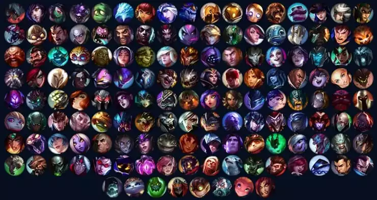
Teams
Two teams compete against eachother with 5 players on each team. Each player chooses an different role.
The Nexus
Destroy the opposing teams nexus to win the game. There are problems along the way.
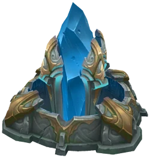
Towers
Each team has 9 towers on their side of the map. They must be destroyed to access the Nexus but if the opponent gets too close they attack.
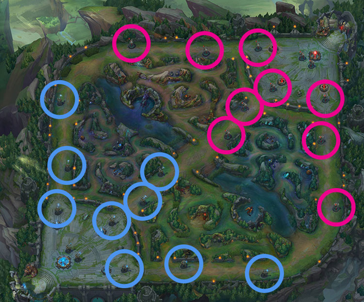 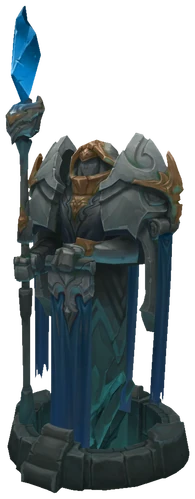
Minions
Luckily minions can be used to distract the towers from attacking the players. The minions also drop gold when eliminated.
 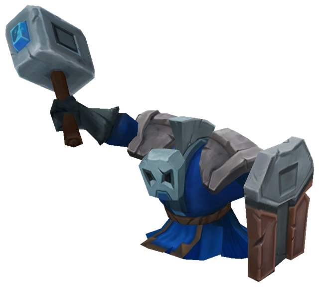
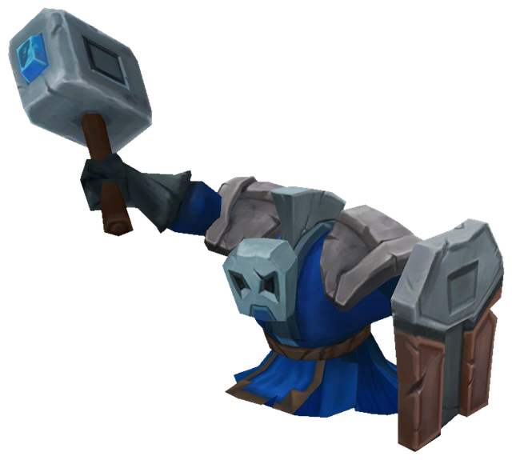
Gold
Gold can be used to purchase items which increase the stats of the champions.
Data Size
Our analysis uses data from 150,000 matches of player data and 68,000 matches of team data. This means sometimes we will use screenshots from our code instead of running it live.
Player Data:
There are 150505 rows.
Team Data:
There are 68676 rows.
Multiple Regression
Multiple regression to test if we can predict the damage a player has dealt knowing the damage they have taken, the gold they had, the minions they eliminated, and the amount of damage they did to turrets.
Call:
lm(formula = DmgDealt ~ DmgTaken + TotalGold + MinionsKilled +
TurretDmgDealt, data = match_stats)
Residuals:
Min 1Q Median 3Q Max
-77051 -5559 -702 4379 198600
Coefficients:
Estimate Std. Error t value Pr(>|t|)
(Intercept) -1.171e+04 7.372e+01 -158.85 <2e-16 ***
DmgTaken 1.241e-01 1.828e-03 67.88 <2e-16 ***
TotalGold 2.954e+00 7.589e-03 389.27 <2e-16 ***
MinionsKilled -1.272e+01 3.176e-01 -40.03 <2e-16 ***
TurretDmgDealt -8.420e+02 1.473e+01 -57.15 <2e-16 ***
---
Signif. codes: 0 '***' 0.001 '**' 0.01 '*' 0.05 '.' 0.1 ' ' 1
Residual standard error: 9929 on 150500 degrees of freedom
Multiple R-squared: 0.6843, Adjusted R-squared: 0.6843
F-statistic: 8.154e+04 on 4 and 150500 DF, p-value: < 2.2e-16
Partial Regression
The next graphs will use Partial Regression. This uses the previous multiple regression claculations but holds all other variables constant. Holding all other variable’s constant allows us to use a 2d graph to compare variables impact on eachother.
Partial Regression

This graph compares Damage Dealt with Damage Taken aquired throughout the game. Takeaway: Both having a positive relationship makes sense as hitting sombody usually results in getting hit back.
Partial Regression

This graph compares Damage Dealt with Total Gold aquired throughout the game. Takeaway: Gold allows users to purchase items that increase damage. More gold meaning more damage dealt makes sense.
Partial Regression

This graph compares Damage Dealt with Minions Killed during the game. Takeaway: Support players are intended to kill minions and not deal damage. This makes sense.
Partial Regression

Note the different graph scales and TurretDmgDealt is meant to be Turret’s Downed. Takeway : Players that destroy towers are less likely to deal a lot of damage.
Chi-square Test of Independence
The test determines if win rate depends on champion.
Assumptions:
- Data is categorical
- Observations are independent
- Expected Frequency ≥ 5
Chi-square Test of Independence
We reject the null hypothesis. There is a statistically significant association between champion choice and match outcome (win/loss).
Pearson's Chi-squared test
data: champion_win_table
X-squared = 444.22, df = 170, p-value < 2.2e-16
Two Way Anova
Df Sum Sq Mean Sq F value Pr(>F)
PrimaryKeyStone 15 2.299e+12 1.533e+11 1287.77 <2e-16 ***
Lane 4 5.753e+11 1.438e+11 1208.36 <2e-16 ***
PrimaryKeyStone:Lane 60 3.482e+11 5.804e+09 48.76 <2e-16 ***
Residuals 107096 1.275e+13 1.190e+08
---
Signif. codes: 0 '***' 0.001 '**' 0.01 '*' 0.05 '.' 0.1 ' ' 1
Jungle - Two Way Anova
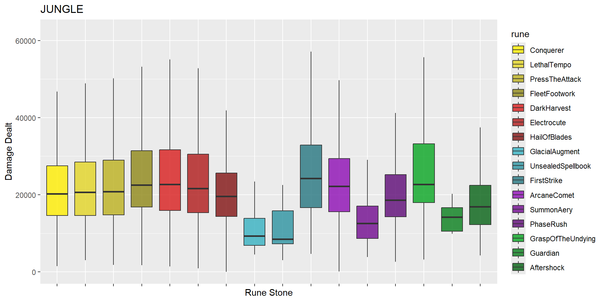
Middle - Two Way Anova

Bottom - Two Way Anova

Support - Two Way Anova
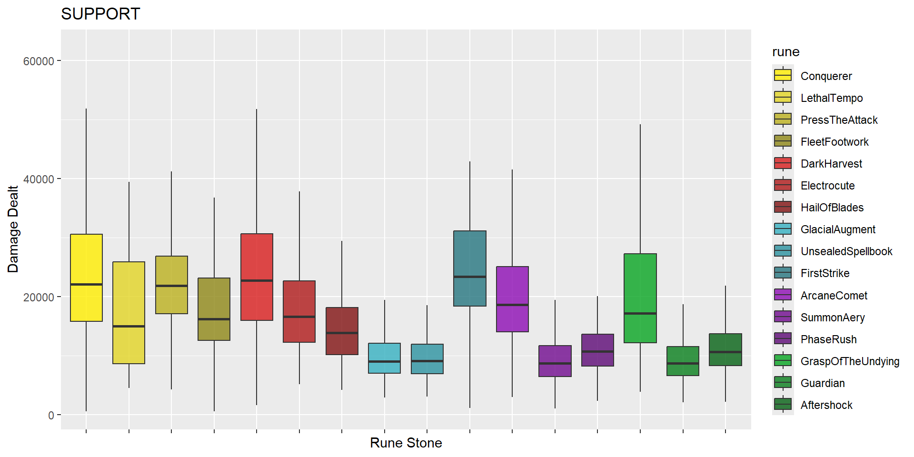
Play Style Clustering
Use K-Means clustering on specific match stats. We set k = 3 and expect to see the three main styles of play get their own cluster (Jungler, Support, Laner).
Features: Damage Dealt, Damage Taken, Total Gold, Kills, Deaths, Assists, Vision Score, Dragon Kills, and Baron Kills.
Play Style Cluster Graph
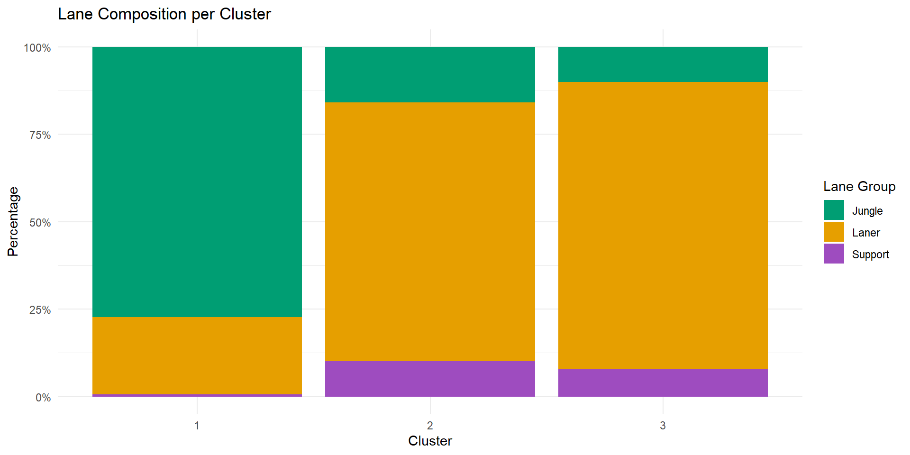
Chi Square Test - Build Optimizer
type here
1-sample proportions test with continuity correction
data: ahri_wins out of total_games, null probability 0.5
X-squared = 27.856, df = 1, p-value = 1.307e-07
alternative hypothesis: true p is not equal to 0.5
95 percent confidence interval:
0.5549201 0.6195286
sample estimates:
p
0.5875952
Pearson's Chi-squared test
data: test_table
X-squared = 10.806, df = 7, p-value = 0.1473
# A tibble: 4 × 3
PrimaryKeyStone games winrate
<int> <int> <dbl>
1 8214 81 0.691
2 8128 62 0.613
3 8112 761 0.577
4 8010 6 0.333
Fisher Test - Build Optimizer
type here
Fisher's Exact Test for Count Data
data: test_table
p-value = 0.1193
alternative hypothesis: two.sided
# A tibble: 35 × 3
item games winrate
<int> <int> <dbl>
1 3171 74 0.797
2 3041 61 0.787
3 2055 27 0.778
4 3175 112 0.741
5 2421 35 0.714
6 3137 36 0.694
7 3135 63 0.683
8 3111 53 0.679
9 4630 56 0.679
10 3108 51 0.667
# ℹ 25 more rows
 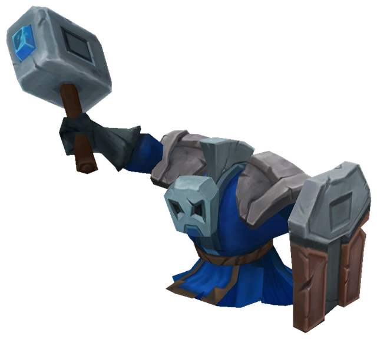
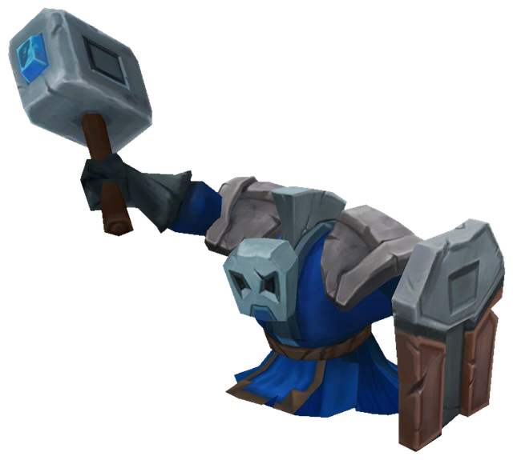